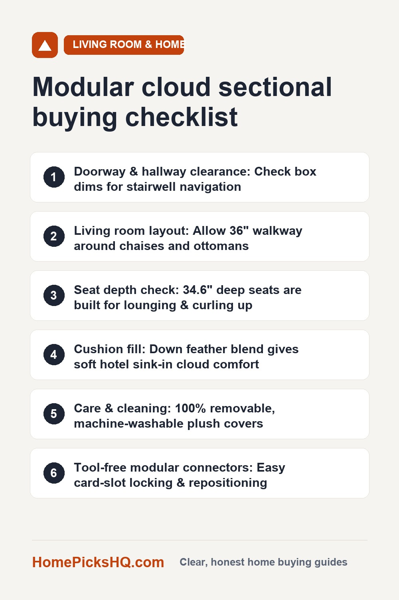

JJJ Oversized Modular Sectional Couch Review: Cloud Comfort, Built-In Tables, and Real-World Specs
How we write these guides: we review manufacturer technical blueprints, structural materials, textile care certifications, and verified customer experiences. We do not claim to have lab-tested every product. Links to Amazon on this page are affiliate links; see our disclosure.
Oversized "cloud" sofas have taken over interior design feeds, promising the sink-in luxury of a high-end resort lounge. But traditional designer cloud sectionals often cost upwards of $6,000 to $10,000 and can turn into a maintenance nightmare if you have kids, pets, or an accidental coffee spill. The JJJ Oversized Modular Sectional addresses those exact pain points: it pairs genuine down-feather cushioning with two built-in solid wood armrest tray tables, deep hidden storage compartments, and 100% removable, machine-washable plush teddy fleece covers. Here is our comprehensive breakdown of its comfort, layout versatility, and real-world room fit.
JJJ Oversized Modular Sectional Sofa Couch (Down Feather Fill & Washable Teddy Fabric)
| Style | Modular oversized cloud sectional (freely configurable) |
|---|---|
| Seat Dimensions | 35.8" wide, 34.6" ultra-deep seat, 36.6" total back height |
| Cushion Fill | Dual-layer: Premium down feather top wrap over high-resilience foam core |
| Armrest Features | 2 Integrated solid wood tray tables with deep interior storage bins |
| Upholstery | Heavyweight plush teddy fleece (100% removable & machine washable) |
| Weight Limit | 350 lbs rated capacity per individual seat module |
| Module Connectors | Heavy-duty steel card-slot locking clips (interlocking base) |
| Setup Time | ~30 minutes tool-free assembly (swivel legs + slot-in backrests) |
| Configurations | U-shape pit lounge, classic L-shape, conversational islands, or bed |
Pros
- Cloud down comfort: Down feather cushioning provides that coveted "sink-in" luxury feel that contours to your body without feeling stiff.
- Built-in wood tray tables: Two sturdy solid wood armrest trays provide immediate surfaces for drinks, laptops, or mugs without buying extra side tables.
- Hidden armrest storage: Spacious flip-top compartments swallow remotes, books, gaming controllers, and throws.
- Fully machine-washable covers: Every cushion and back cover unzips for cold gentle-cycle washing—a lifesaver for homes with pets or toddlers.
- Tool-free 30-minute assembly: Modules slide and lock into pre-aligned card slots without screwdrivers, Allen keys, or complicated manuals.
Cons
- Ultra-deep seat profile: At 34.6 inches of seat depth, petite individuals may need an extra lumbar pillow if they prefer sitting rigidly upright.
- Requires occasional fluffing: Like all genuine down feather furniture, cushions benefit from a quick fluff every week or two to maintain maximum loft.
- Large room footprint: In an expanded U-shape or pit layout, it requires a sizable living room with at least 36 inches of peripheral walking clearance.
Check price on Amazon Price and availability change often. As an Amazon Associate I earn from qualifying purchases.
Down Feather "Cloud" Comfort: How It Compares to Standard Foam
Most budget sectionals use 100% polyurethane foam. While foam is supportive initially, cheap foam tends to feel rigid for the first three months, then suddenly breaks down and sags permanently after a year of heavy use.
The JJJ Modular Sectional uses a hybrid multi-density construction:
- Top Down Layer: Generous layers of natural down feather wrap the perimeter of each cushion, producing the soft, enveloping contour associated with five-star hotel lobbies.
- High-Resilience Inner Core: A dense supportive foam foundation prevents you from bottoming out against the frame when you drop into the seat.
The result is a lounge-first seating experience: you sink gently into the top three inches of plush down, while the resilient core supports up to 350 pounds per seat without fatigue.
Built-In Wood Tray Tables & Hidden Armrest Storage
One of the most practical innovations on this sectional is the integrated armrest design. Rather than soft, round arms that can't support a cup without spilling, the JJJ features two wide, flat solid wood tray tables built right into the arm tops.
Beneath each wood tray lies a deep hollow storage compartment. In open-concept living rooms or apartments where coffee tables can crowd the center walkway, these hidden side bins hold:
- TV remotes, streaming sticks, and game controllers
- Current books, magazines, and reading glasses
- Folded throw blankets for chilly evenings
- Charging cables and power banks
Having a rock-solid wood surface right next to your elbow means your morning coffee or evening wine sits completely level without worrying about drinks tipping over on soft upholstery.
Washable Teddy Fleece: Surviving Pets, Kids, and Spills
Light-colored furniture—especially cream, ivory, or oatmeal tones—often terrifies homeowners. One spilled glass of juice or muddy dog paw can permanently ruin an upholstered couch that requires spot extraction.
The entire exterior of the JJJ sectional is wrapped in plush, tactile teddy fleece (bouclé style) engineered specifically for machine maintenance:
- Hidden Zippers: Smooth perimeter zippers allow you to strip the covers off the seat cushions, backrests, and pillows in less than two minutes.
- Cold Gentle Wash: Place covers in your home washing machine on a cold, gentle cycle with mild detergent.
- No Matting or Shrinkage: The textured synthetic blend maintains its curly, high-pile loft after drying without shrinking, so re-stuffing the cushions is painless.
Endless Modular Configurations: Pit Couch, L-Shape, or Bed
Fixed-frame sectionals trap you into one rigid living room layout. If you move to a new apartment or decide to rearrange your TV wall, a left-facing chaise can suddenly block a patio slider or doorway.
Because each module of the JJJ couch is a standalone structural unit, you can reconfigure your setup whenever your needs change:
- The Movie Night "Pit": Push the center ottomans directly between the side chaises to create a massive continuous lounging platform where the entire family can stretch out horizontally.
- Classic L-Shape Sectional: Anchor one corner of the living room while keeping the opposite side open to a dining area or kitchen island.
- Separated Conversation Seating: Pull the modular armless chairs apart when entertaining guests for open 360-degree party circulation.
- Sprawling Guest Daybed: Clustered together, the ultra-deep 34.6-inch seats easily form a queen-equivalent sleeping surface for overnight visitors.
Measuring Your Living Room & Doorway Clearance
Before purchasing an oversized sectional, review these spatial guidelines:
- Walkway Clearance: Maintain at least 30 to 36 inches of walking space between the edges of the sectional and surrounding coffee tables, TV consoles, or room entryways.
- Doorway Navigation: Unlike monolithic 90-inch sofas that get stuck in apartment stairwells, the JJJ modules ship in separate manageable cartons designed to clear standard 30-inch doorways and tight apartment hallways with ease.
- Seat Depth Assessment: At 34.6 inches of seat depth, this is an authentic lounging couch. If you have elderly family members who require shallow, upright seats to push themselves out of a chair, consider pairing this sectional with a firmer accent armchair.
Tool-Free 30-Minute Assembly: How It Works
Furniture assembly is often associated with hundreds of screws and vague illustrated manuals. JJJ engineered this sectional with a tool-free modular card-slot connection system:
- Step 1: Unpack the individual module bases and swivel the solid feet onto each corner by hand.
- Step 2: Align the heavy-duty metal card-slot brackets between adjoining seats and slide them downward until they lock into place.
- Step 3: Drop the backrest posts into the frame channels and set your down-cushion pillows on top.
The entire setup takes under 30 minutes with two people, with zero sore fingers or hex key headaches.
Quick Modular Cloud Sectional Checklist
- Measure room layout allowing for 30–36" of peripheral walking clearance
- Confirm doorway width is at least 30 inches for delivery carton pass-through
- Seat depth of 34.6" matches your household's preference for lounging and curling up
- Down-feather cushion blend fits your desire for a soft, sink-in luxury feel
- Machine-washable zip-off teddy fleece covers match your pet and family lifestyle
- Modular card-slot interlocking brackets hold sections firmly on your flooring
Check price on Amazon Use the checklist above to plan your living room dimensions. As an Amazon Associate I earn from qualifying purchases.

Free 2026 Home & Kitchen Checklist Pack
Download our printable 1-page buyer checklists for every major room and appliance—dimensions, wattage guide, and common pitfalls to avoid before you order.
Frequently Asked Questions
How do you wash the teddy fabric covers?
Every cushion and frame cover is completely removable with heavy-duty hidden zippers. Machine wash on a gentle, cold cycle with mild detergent, then tumble dry on low heat or line dry. The textured teddy fleece is engineered to resist shrinking or matting.
Does the couch sink in too deep or offer lumbar support?
With 34.6-inch deep seats and generous down-feather filling, this sofa is designed primarily for relaxed lounging, curling up, and movie nights. The down layer contours gently while an inner high-density supportive foam core prevents you from bottoming out on the base.
Can it fit through tight apartment hallways and doorways?
Yes. Because it is a true modular design, each piece ships in its own separate, manageable carton that easily clears narrow 30-inch doors, tight apartment stairwells, and small elevators without risking scuffed door frames.
Do the modular sections slide apart on hardwood floors?
The sofa uses heavy-duty card-slot interlocking connectors between adjoining base modules that lock the pieces firmly together. Non-slip rubber foot pads are also included to grip hardwood or laminate floors.